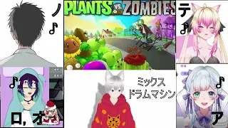
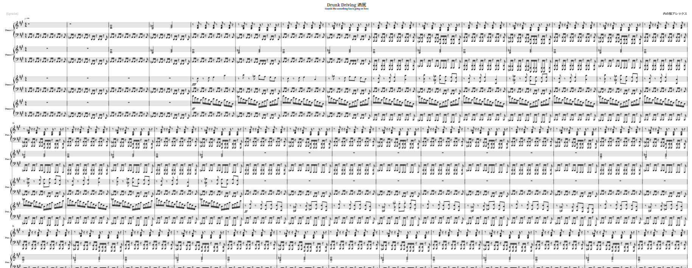
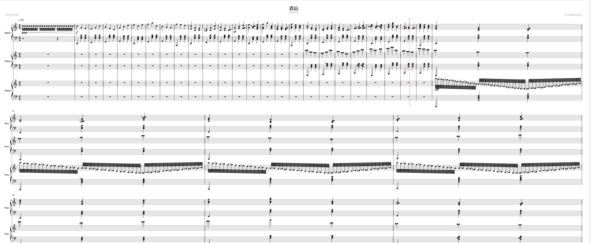
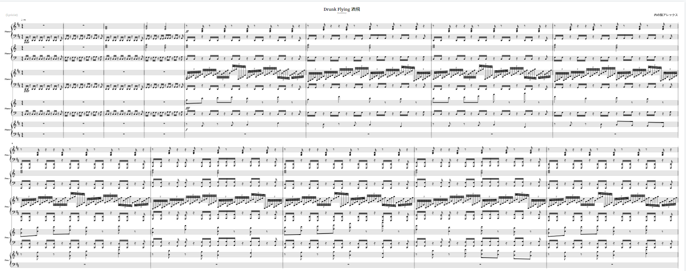
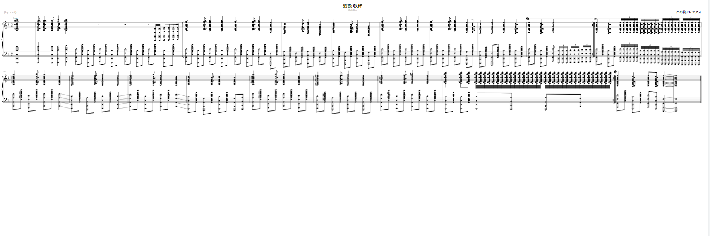

- Abnormal Nishi Composition
-
This kind of music is just piano pieces like the classic one but without brain.
For your information, those song are not playable, for example, "Kanpai Too Much"
Unless you have 12 finger per hand and they can spread for at least 15 centimeter.
I hope you'll enjoy the song I wrote when I'm stress.
For the reason why I wrote those, it's also because I hope to use funny music
to let people know there's a limit on taking alcohol, enough but not drunk.
Oww, there's something I forgot to say, I still don't have a thumbnail artist at that time,
so I'll use the sheet music as the thumbnail.^^




